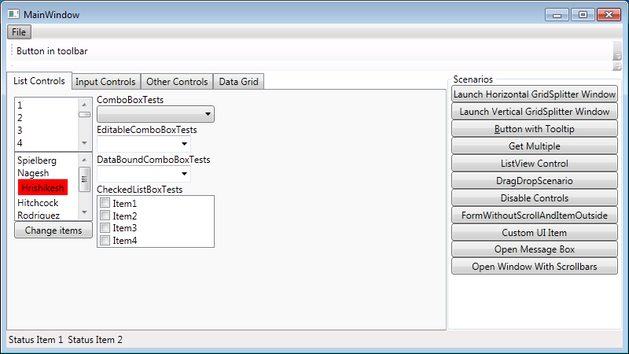
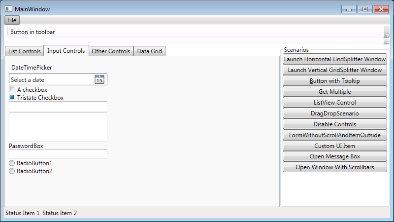

UI test automation library designed to simplify automated test writing and reading.
Lets consider testing the sample application (you can get it here)   For example we will take a simple scenario:
{% highlight csharp %}
public class MainWindowTab1
{
private static MainWindowTab1 _instance;
private Window _window;
private Control _combobox;
private MainWindowTab1()
{
_window = new Window("MainWindow");
_combobox = _window.FindControl("AComboBox");
}
public static MainWindowTab1 Instance
{
get { return _instance ??
(_instance = new MainWindowTab1()); }
}
public MainWindowTab1 SelectItemFromCombobox(string item)
{
_combobox.SelectItem(item);
return this;
}
}
{% endhightlight %}
[Test]
public void SampleTest()
{
MainWindowTab1.Instance
//Tab 1
.SelectItemFromCombobox("Test4")
.SetItem1CheckboxState(ToggleState.On)
.SetItem2CheckboxState(ToggleState.On)
.SetItem1CheckboxState(ToggleState.Off)
.OpenSecondTab()
//Tab 2
.SetTextToMultilineTextbox("some text")
.SelectRadiobuttonState();
}